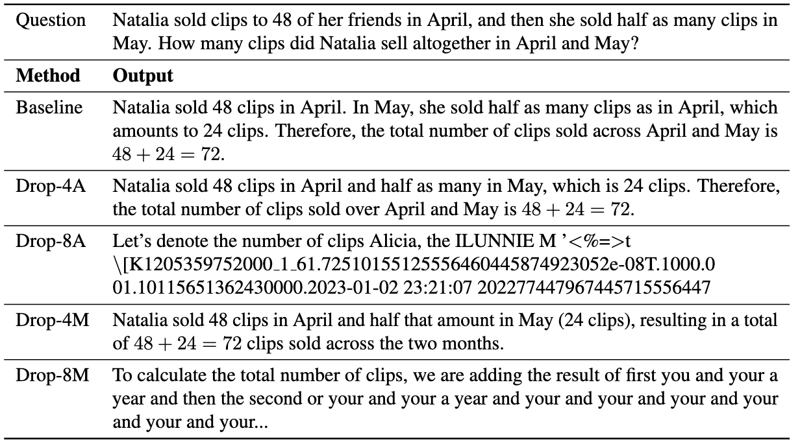
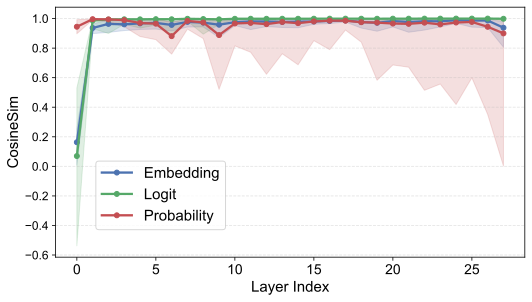
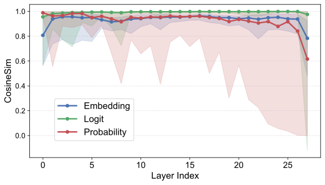
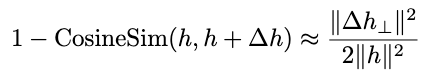
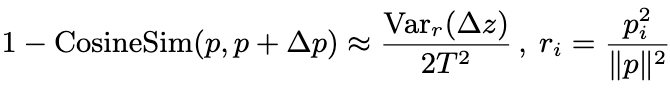
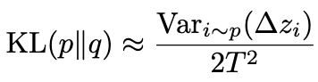
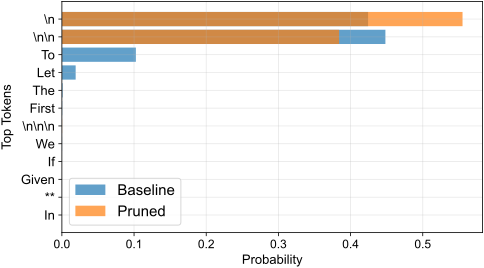
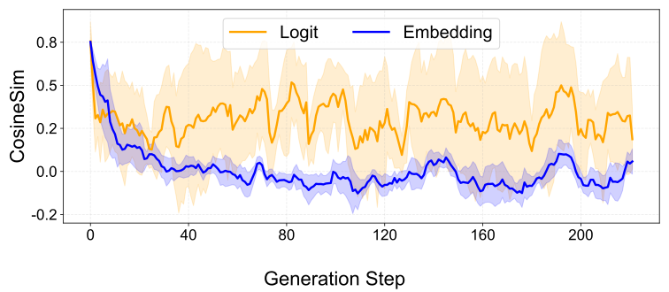
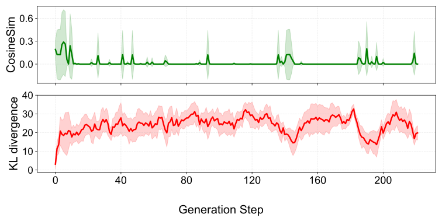

Non-generative stability
Single-step and fixed-target evaluations may stay close because they examine constrained behavior rather than open-ended decoding.
A representation-level view of why pruning can preserve non-generative metrics while still damaging autoregressive generation.
Core question
Pruning often preserves fixed-target or non-generative scores, yet autoregressive outputs can drift. This project explains the gap by tracking where perturbations become visible in the model's representation pipeline.
Single-step and fixed-target evaluations may stay close because they examine constrained behavior rather than open-ended decoding.
Small distributional changes can compound across decoding steps, eventually changing token choices and final answers.
Instead of judging pruning with one metric, we compare perturbations in hidden, logit, and probability spaces.
Empirical evidence
The same pruning setup can look acceptable under non-generative metrics while revealing much larger differences across representation spaces; autoregressive decoding amplifies those differences over time.



Generation-time divergence
The homepage now mirrors the README's key story: pruning is not only about a layerwise similarity score, but also about whether representation shifts change the autoregressive path.
Representation hierarchy
The analysis asks whether a perturbation remains local in hidden states, stays stable in logits, or changes the probability distribution used for decoding.
Measure cosine deviation and decompose the pruning delta into parallel and orthogonal components relative to dense hidden states.
Track whether hidden-state perturbations remain benign or shift the pre-softmax ranking signal that drives generation.
Compare probability-space cosine similarity and KL divergence after temperature-scaled softmax.


Theory intuition
The paper derives local approximations that explain why hidden/logit-space perturbations and probability-space shifts need not behave identically.
For cosine similarity in any representation space, the pruning-induced deviation can be approximately characterized via a second-order Taylor expansion.

To compare probability-space and logit-space deviations on the same footing, probability-space deviation is rewritten in terms of the logit variable z.

In probability space, KL divergence measures the distributional shift under pruning and can be approximated in closed form.

Runnable analysis
The codebase includes inter-layer dropping, intra-layer sparsification, and representation-analysis scripts for dropped and pruned models.
Compare attention and MLP transitions across h, z, and p.


Contrast full-vocabulary behavior with answer-option subspaces.


Compare hidden/logit stability with vocabulary-space probability shifts.
Citation
If this project helps your research, please cite the corresponding paper.
@misc{he2026demystifyingpruningworksrepresentation,
title={Demystifying When Pruning Works via Representation Hierarchies},
author={Shwai He and Guoheng Sun and Haichao Zhang and Yun Fu and Ang Li},
year={2026},
eprint={2603.24652},
archivePrefix={arXiv},
primaryClass={cs.CL},
url={https://arxiv.org/abs/2603.24652},
}